쿠지알러 ‘기업 상품 라이브러리’ 페이지별 분석과 HP3 컨텐츠 라이브러리 적용
쿠지알러 관리 백오피스의 /pub/saas/admin/brandgoods/all(企业商品库)에서 연결되는 화면을 모두 열어 보고, 각 화면이 무슨 작업을 하는지와 어떤 데이터를 다루는지를 정리했습니다. 이 분석을 바탕으로 HP3 어드민 ‘컨텐츠 관리 › 컨텐츠 라이브러리’를 만들었습니다.
| 분석 대상 | https://www.kujiale.com/pub/saas/admin/brandgoods/all (HANSSEM 기업 계정) |
|---|---|
| 분석 방법 | 로그인한 브라우저에서 화면 조작 + 읽기 전용 GET API 응답 확인. 저장·삭제·등록·내보내기 실행 버튼은 누르지 않음 |
| 규모 (분석 시점) | 모델 라이브러리 5,000개 · 재질 4,176개 · 전체 가구 맞춤 재질 4,097개 · 주방·욕실 맞춤 재질 3,023개 · 태그 그룹 123개(태그 2,090개) |
| HP3 결과물 | src/pages/content/ContentLibrary.tsx · ContentModals.tsx · src/data/contentLibrary.ts · 시드 public/content-library-seed.json |
0한눈에 보기
기업 상품 라이브러리는 설계 툴(쿠지알러 디자인 도구)에서 쓰는 모든 상품·소재의 원장입니다. 운영자는 여기서 소재를 올리고, 폴더로 분류하고, 상품 정보(모델번호·상품코드·브랜드·가격·태그)를 채우고, 설계 툴 노출 여부와 외부 공개·권한을 정합니다.
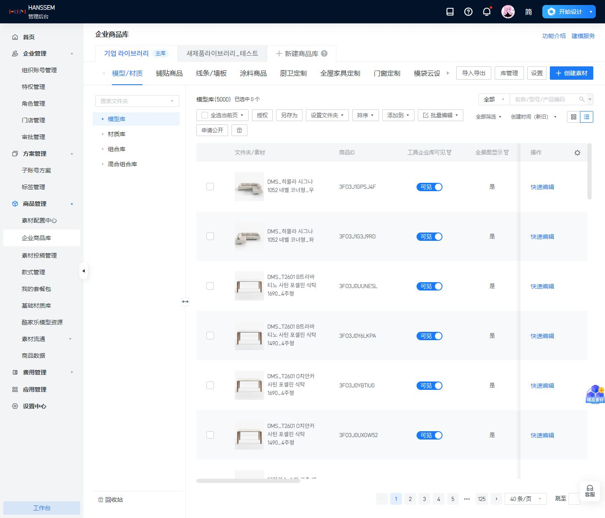
| 화면 | 주요 작업 | 진입 방법 |
|---|---|---|
| 상품 목록 | 조회·선택·노출 전환·일괄 작업의 출발점 | 메뉴 ‘企业商品库’ |
| 빠른 편집 | 상품 기본 정보 10개 항목 수정 | 행의 ‘快速编辑’ |
| 상품 상세 | 전체 속성 조회·편집, 소재 관리(모델 분할·크기 수정 …), 실물 이미지·상세 소개 | 상품 클릭 → 새 탭 |
| 소재 만들기 | 업무 탭별 소재 유형 선택 → 업로드·생성 | ‘创建素材’ |
| 가져오기/내보내기 | 엑셀 일괄 등록·수정, 분류·속성 선택 내보내기, 작업 이력 | ‘导入导出’ → 새 탭 |
| 라이브러리 관리 | 라이브러리 이름, 내부 인원·외부 계정 권한 | ‘库管理’ → 별도 페이지 |
| 설정 | 목록 표시·툴바 구성·정렬·통화·조합 모델 규칙 | ‘设置’ 모달 |
| 휴지통 | 삭제 상품 복원 | 트리 하단 ‘回收站’ |
1정보 구조
업무 탭 · 소재 라이브러리 bgs/dynamic-config
업무 탭과 그 아래 소재 라이브러리 구성은 화면에 고정된 것이 아니라 /bgs/dynamic-config?page_id=1 응답(businessLineConfigs)과 계정 권한으로 결정됩니다. 설정에는 15개 탭이 있지만 HANSSEM 계정 화면에는 10개만 보입니다(‘副本’ 복제 탭·조명 설계·천장벽 맞춤은 권한 없음).
| 업무 탭 (원문) | 소재 라이브러리 (library 번호) | 탭 전용 작업 |
|---|---|---|
| 모델/재질 (模型/材质) | 모델 1 · 재질 39 · 조합 3 · 혼합 조합 112 | — |
| 타일·바닥 (铺贴商品) | 타일 상품 4 · 파라메트릭 방안 5 | 입고(入库) |
| 몰딩/벽판 (线条/墙板) | 몰딩·벽판 7 | — |
| 도료 (涂料商品) | 컬러칩 9 · 벽면 패턴 10 · 도료 11 | — |
| 주방·욕실 맞춤 (厨卫定制) | 미분류 12 · 재질 13 · 몰딩 14 · 패턴 43 · 프론트 모델 제품 15·조합 16·부품 모드 17 · 백엔드 모델 내부 부품 18·액세서리 19·반제품 20·가상 부품 21 | 렌더링 · 입고 · 부품 업데이트 |
| 전체 가구 맞춤 (全屋家具定制) | 22~31 (주방·욕실 맞춤과 같은 구성) | 렌더링 · 입고 · 부품 업데이트 |
| 창호 맞춤 (门窗定制) | 미분류 32 · 재질 33 · 몰딩 34 · 패턴 79 · 일반 창호 35 · 알루미늄 창호 41 · 일반 부품 36 · 알루미늄 부품 42 · 반제품 37 · 액세서리 38 · 가상 부품 45 | 렌더링 · 입고 · 부품 업데이트 |
| 몰드 클라우드 (模袋云设计) | 모델 81 · 재질 82 · 몰딩 83 · 파라메트릭 모델 97 · 파라메트릭 부품 98 | — |
| 평면 배치 (平面布置) | 배치 소재 99 · 배치 조합 110 | — |
| 쿠다스 모델링 (酷大师) | 모델 78 · 재질 92 | — |
상품 데이터 모델 bgs/brandgood/enterprise
목록 API는 상품마다 기본 필드와 tableModelExtendInfo(표 컬럼용 확장 정보)를 돌려줍니다.
| 필드 | 의미 | 화면 표기 |
|---|---|---|
| obsBrandGoodId | 외부 공개 상품 ID (예: 3FO3J1GPSJ4F) | 상품 ID |
| name · coverImage · previewImage | 상품명 · 표지 · 미리보기 이미지 | 폴더/소재 |
| visible | 설계 툴 기업 라이브러리에 노출 | 도구 노출 (스위치) |
| ready · status | 렌더(모델 변환) 완료 여부 | 렌더 상태 필터 |
| top · topNumber | 상단 고정과 순번 | 정렬 › 상단 고정 |
| ext.productNumber / brandGoodCode | 모델번호 / 상품코드(ERP) | 모델번호 · 상품코드 |
| ext.brandName · seriesTagName | 브랜드 · 시리즈 | 브랜드·시리즈 |
| ext.prodCatName | 렌더 분류 (다인 소파, 식탁 …) | 렌더 분류 |
| ext.locationId | 배치 위치 (1 = 바닥 가구) | 배치 위치 |
| ext.boundingBox.copy · sizeLock | 모델 크기 W×D×H, 크기 잠금 | 모델 크기 · 크기 잠금 |
| ext.customTags · price · buyLink · description | 태그 · 판매가 · 구매 링크 · 설명 | 동명 컬럼 |
| ext.public · existModelViewer | 공용 라이브러리 공개 · 3D 쇼룸(酷品秀) 여부 | 공개 · 3D 쇼룸 |
| syncData | 추가 라이브러리 동기화 대상 | 사용자 라이브러리 동기화 |
사용자 정의 필드는 /bgs/customfield/query로 정의(9개: 첨부자료, 스펙보기×6, 설명, 주의사항)를 받고, 값은 /bgs/customfield/data/query(POST)로 따로 조회합니다.
2페이지별 작업 분석
각 화면에서 운영자가 실제로 하는 작업, 화면 구성, HP3에서 어떻게 옮겼는지를 차례로 적었습니다.
2-1 상품 목록 brandgoods/all
- 무엇을 하나
- 선택한 소재 라이브러리·폴더의 상품을 40개씩 보여 주고, 체크한 상품에 일괄 작업을 겁니다. 행 안에서 ‘도구 노출’ 스위치를 바로 켜고 끕니다.
- 화면 구성
- ① 라이브러리 탭(기업 라이브러리 = 주 라이브러리, 추가 라이브러리, + 새 라이브러리) ② 업무 탭 + 우측 ‘가져오기/내보내기 · 라이브러리 관리 · 설정 · 소재 만들기’ ③ 좌측 소재 라이브러리 트리 + 폴더 검색 + 휴지통 ④ 경로·개수·선택 수, 검색 범위(전체/이름/모델번호/상품코드) + 검색어 ⑤ 툴바 ⑥ 표 또는 카드 ⑦ 페이지(40개/페이지, 이동)
- URL 상태
- 탭·라이브러리·페이지·보기 방식이 쿼리에 들어갑니다:
tpl=libtemplate.general&lib=1&qlibs=1,39,3,112&p=1&mode=1(mode 0=카드, 1=표), 폴더는ofi=<폴더 obsId>, 휴지통은libtype=dustbin. - HP3
- 같은 배치로 구현. 페이지 크기는 HP3 공통
Pagination(20/50/100)을 씁니다. 표/카드 보기와 컬럼 구성은 보는 사람 브라우저에 기억합니다.
2-2 폴더 트리 bgs/businesscat
- 무엇을 하나
- 소재 라이브러리마다 폴더(업무 분류, businesscat)를 계층으로 관리합니다. 폴더를 누르면 그 폴더 상품만 보입니다. 쿠지알러는 해당 폴더 직속 상품만 보여 줍니다(예: ‘가구(0)’).
- 폴더 메뉴 (⋯)
- 하위 폴더 만들기 · 이름 변경 · 삭제 · 표지 설정 · 폴더 숨기기. 숨긴 폴더는 설계 툴에 보이지 않고 회색 아이콘으로 표시됩니다.
- 데이터
- 노드:
obsId, name, order, cover, hide, children, catIdsWithChildren, syncData. 상품 조회는brandgood/enterprise?catid=<obsId>. - HP3
- ⋯ 메뉴 5개 모두 구현. 소재 라이브러리 노드의 ⋯에서 최상위 폴더를 만듭니다. ‘하위 폴더 상품 포함’ 체크(기본 켬)를 추가해 상위 폴더에서도 전체를 볼 수 있게 했습니다(쿠지알러 방식은 체크 해제와 같음).
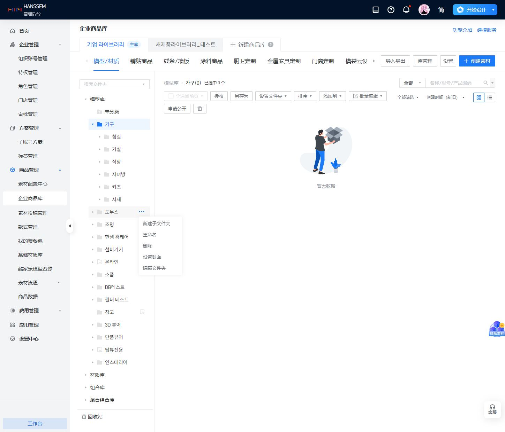
2-3 일괄 작업 툴바
체크한 상품에 적용합니다. 순서와 노출 여부는 ‘설정 › 목록 작업 항목’에서 바꿀 수 있습니다.
| 버튼 | 하위 항목 · 동작 | HP3 |
|---|---|---|
| 권한 부여 (授权) | 파트너 계정(브랜드 보유 업체)에 상품 사용 권한 부여 | 구현 부여·회수 |
| 다른 이름으로 저장 (另存为) | 선택 상품의 복사본을 다른 폴더에 생성 | 구현 |
| 폴더 설정 ▾ | 폴더에 추가(원 폴더 유지, 다중 소속) / 폴더로 이동 | 구현 |
| 정렬 ▾ | 상단 고정 / 고정 해제 | 구현 |
| 추가 ▾ | 패키지(套餐包)에 추가 / 스타일(款式)에 추가 | 구현 새 패키지·스타일 만들기 포함 |
| 일괄 편집 ▾ | 분할 전처리 · 설비 분류 · 배치 위치 · 도구 표시 · 전경도 상품 · 상품명 · 모델번호 · 상품코드 · 브랜드 시리즈 · 상품 크기 · 재질 · 판매가 · 구매 링크 · 설명 · 태그 · 단위 · 모델 설정 · 크기 잠금 (18개) | 15개 구현 3개 에디터 연동 필요 |
| 공개 신청 (申请公开) | 공용 라이브러리 공개 심사 요청 | 구현 ‘신청중’ 상태 |
| 삭제 (🗑) | 휴지통으로 이동 | 구현 |
| 렌더링 · 입고 · 부품 업데이트 | 맞춤·타일 탭 전용 | 상태 표시만 |
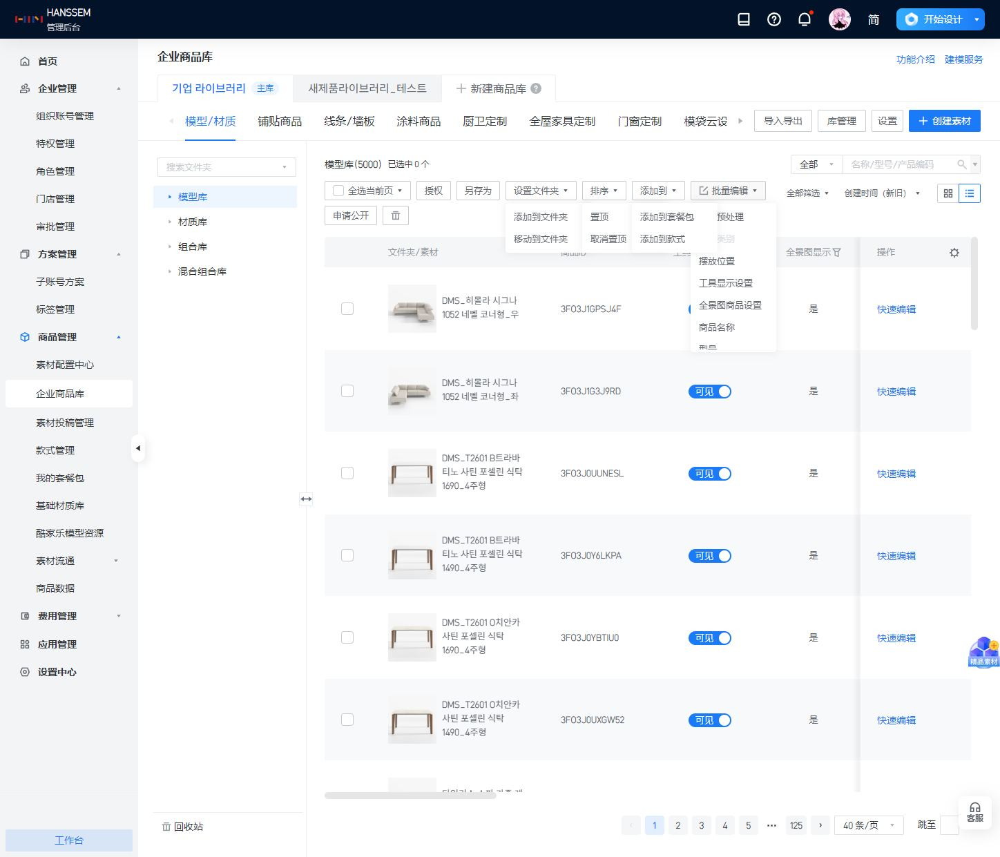
2-4 필터 · 정렬 · 검색
- 필터 패널
- 도구 노출(전체/노출/비노출) · 자체 브랜드(브랜드 → 시리즈) · 권한 부여 브랜드(파트너 → 브랜드) · 렌더 상태(렌더링중/성공/실패) · 공용 라이브러리 공개, 그 아래에 태그 그룹 123개가 이어집니다. ‘기본값으로 / 취소 / 확인’.
- 정렬
- 생성 시간(최신·오래된) · 이름(가나다·역순). 상단 고정 상품은 항상 위.
- 검색
- 범위 선택(전체/이름/모델번호/상품코드) + 검색어.
- HP3
- 모두 구현. 태그는 지금 목록에 실제로 붙은 태그만 먼저 보여 주고(123개 그룹을 다 펼치면 찾기 어려움), 태그 검색과 ‘목록에 없는 태그도 보기’를 추가했습니다. 어느 그룹에도 없는 상품 태그는 ‘그룹 미지정’으로 묶습니다.
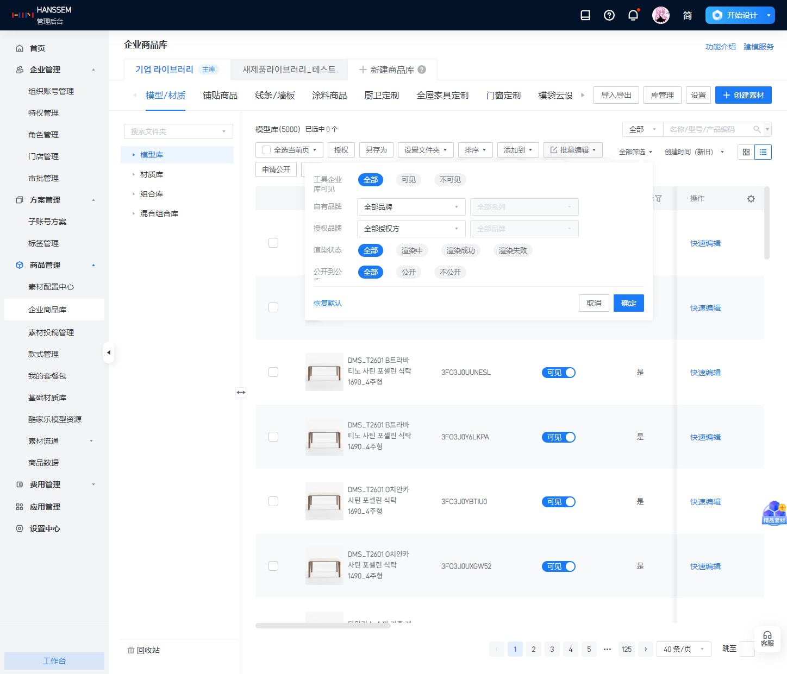
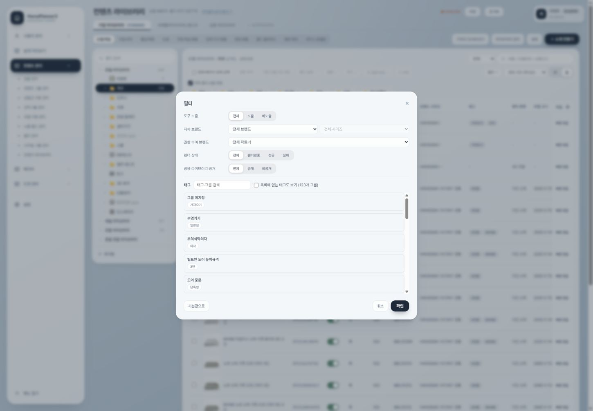
2-5 컬럼 설정 · 카드 보기
- 컬럼
- ⚙에서 31개 컬럼을 끌어서 순서를 바꾸고 체크로 표시 여부를 정합니다: 폴더/소재, 상품 ID, 도구 노출, 전경도 표시, 모델번호, 상품코드, 브랜드·시리즈, 태그, 렌더 분류, 배치 위치, 상품 크기, 재질, 판매가, 구매 링크, 공용 라이브러리 공개, 생성자, 생성일, 모델 크기, 모델 크기 잠금, 3D 쇼룸, 설명, 사용자 라이브러리 동기화 + 사용자 정의 필드 9개.
- 카드 보기
- 이미지 중심 5열 격자. 마우스를 올리면 체크박스가 나타납니다.
- HP3
- 구현. 기본 표시 컬럼은 11개로 줄였습니다(나머지는 컬럼 설정에서 켬). 카드에 마우스를 올리면 ‘빠른 편집’, 비노출 상품에는 ‘비노출’ 배지가 붙습니다.
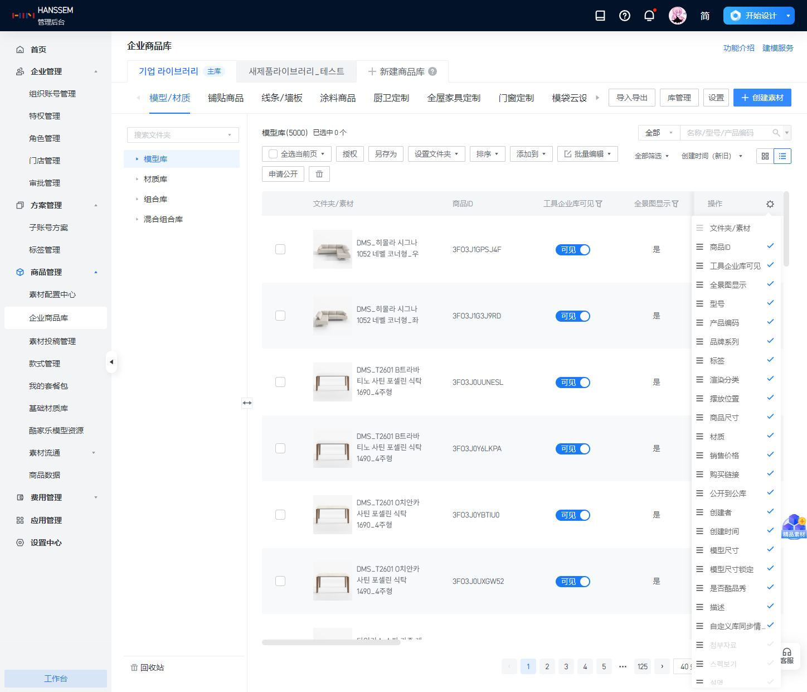
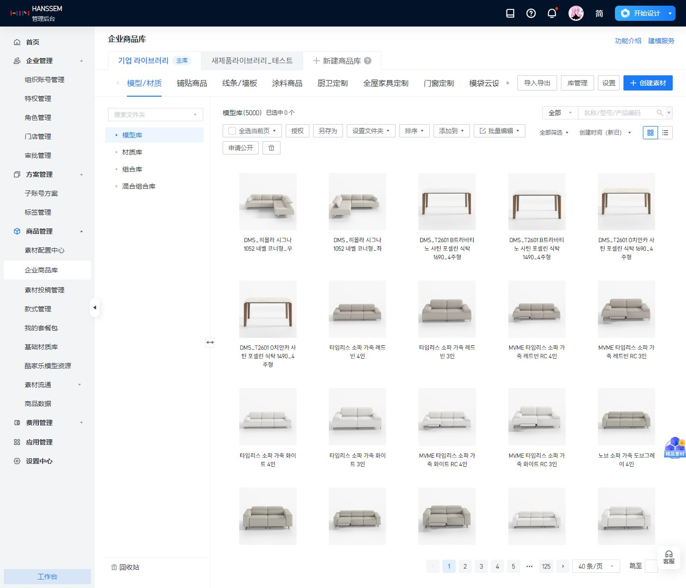
2-6 빠른 편집 快速编辑
- 무엇을 하나
- 상세 페이지로 가지 않고 자주 바꾸는 항목만 고칩니다.
- 항목
- * 상품명(128자) · 모델번호 · 상품코드 · 브랜드·시리즈 · 상품 크기(200자) · 판매가(통화) · 단위 · 구매 링크(웹/앱) · 설명(1000자) · 태그
- HP3
- 같은 항목으로 구현. 태그는 123개 그룹에서 검색해 고르고, 통화는 KRW로 표시합니다.
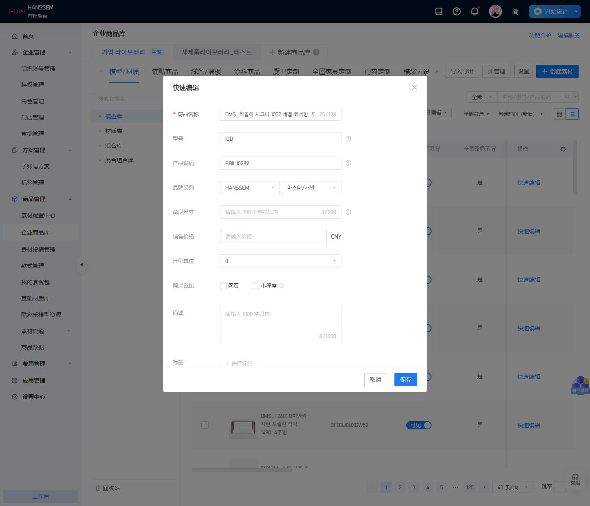
2-7 상품 상세 pub/saas/brandgoods/detail
- 무엇을 하나
- 상품 하나의 모든 정보를 보고, 모델 자체를 다루는 작업(소재 관리)을 합니다. 상품을 누르면 새 탭으로 열립니다.
- 상단 작업
- 소재 관리 ▾(모델 분할 · 모델 설정 · 표지 설정 · 3D 재질 교체 · 모델 크기 수정 · 범례 태그) · 3D 쇼룸(酷品秀) ▾(생성) · 관련 상품 보기 · 작업 이력 · 편집
- 섹션
- 기본(생성 시간·생성자·상품 ID 복사) → 사용 설정(도구 노출·전경도) → 소재 정보(렌더 분류·모델 크기·크기 잠금·배치 위치·범례 태그) → 상품 정보(모델번호·상품코드·브랜드 시리즈·권한 부여 대상·크기·재질·판매가·단위·구매 링크·설명·태그) → 사용자 정의 정보 → 상품 위치(라이브러리 › 탭 › 소재 라이브러리 › 폴더 경로) → 실물 이미지 관리(1:1 권장) → 상세 소개(마케팅용) → 관련 방안(이 모델을 쓴 설계안)
- HP3
- 모달로 구현. 표지 설정·모델 크기 수정·3D 쇼룸·관련 상품·작업 이력·사용자 정의 값·실물 이미지·상세 소개를 실제로 바꿀 수 있습니다. 모델 분할·모델 설정·3D 재질 교체·범례 태그는 HP3 에디터와 연동해야 해서 비활성으로 두었습니다.
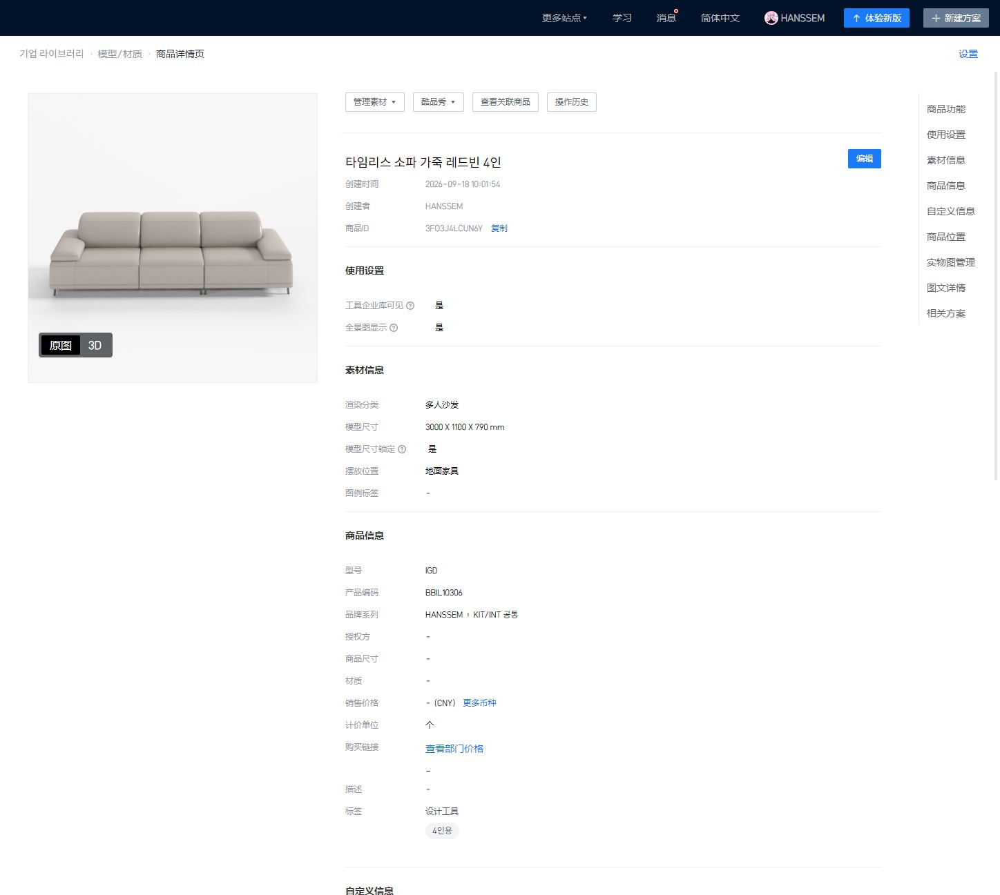
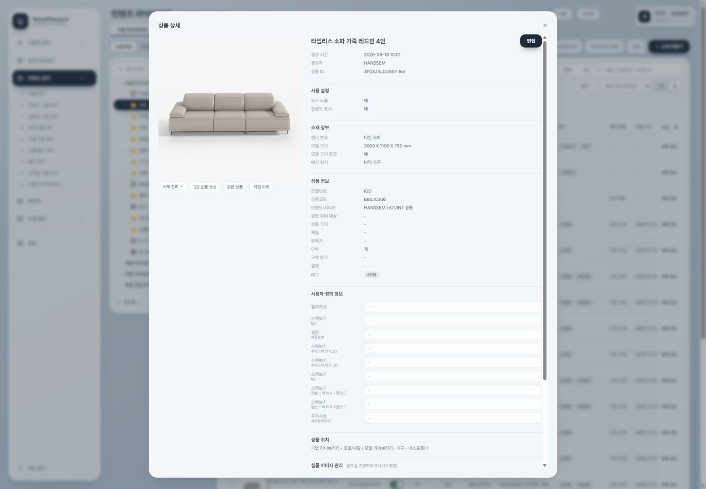
2-8 소재 만들기 创建素材
업무 탭을 고르면 그 탭에서 만들 수 있는 소재 유형 카드가 나옵니다. 유형마다 별도 업로드 도구로 이어집니다.
| 업무 탭 | 소재 유형 |
|---|---|
| 모델/재질 | 3D 모델(3DsMax·SketchUp) · 재질 텍스처 · 혼합 재질 |
| 타일·바닥 | 천장판 모델 · 천장판 텍스처 · 타일 상품 · 보더 패턴 · 타일 배열 패턴 · 워터젯 패턴 · 비정형 상품 · 파라메트릭 편집기 |
| 몰딩/벽판 | 몰딩/벽판 |
| 도료 | 컬러칩 · 벽면 패턴 · 도료 상품(요철 질감) |
| 주방·욕실 / 전체 가구 / 창호 맞춤 | 파라메트릭 모델 · 재질 텍스처 · 3D 모델 · 몰딩 프로파일 · 3D 모델 분할 · 가상 모델 · 프린트 패턴 |
| 몰드 클라우드 | 3D 모델 · 재질 텍스처 · 몰딩 프로파일 · 파라메트릭 모델 |
| 평면 배치 | 배치 소재(DXF/DWG/SVG 범례) |
| 쿠다스 모델링 | 모델 · 재질 텍스처 |
HP3: 같은 카드(쿠지알러 uploadPortals 번호·순서·설명)를 보여 주고, 카드를 누르면 쿠지알러처럼 그 카드의 생성 화면이 열립니다 — 카드별 화면과 생성 조건은 3-2 절.
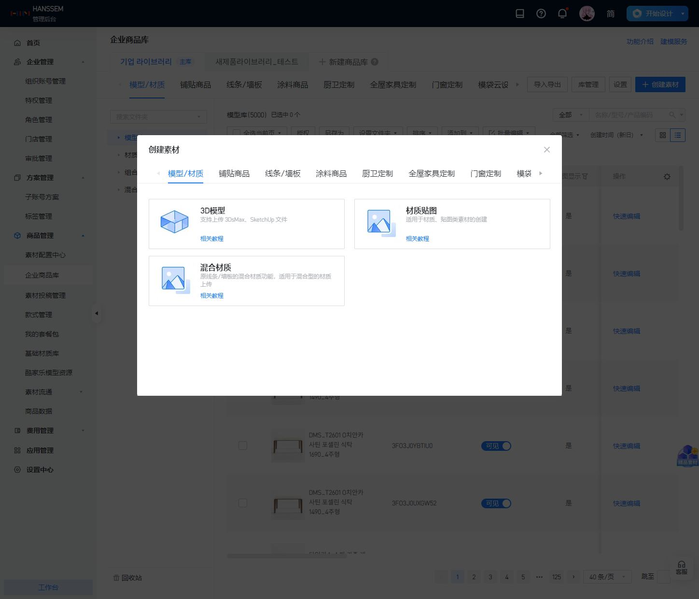
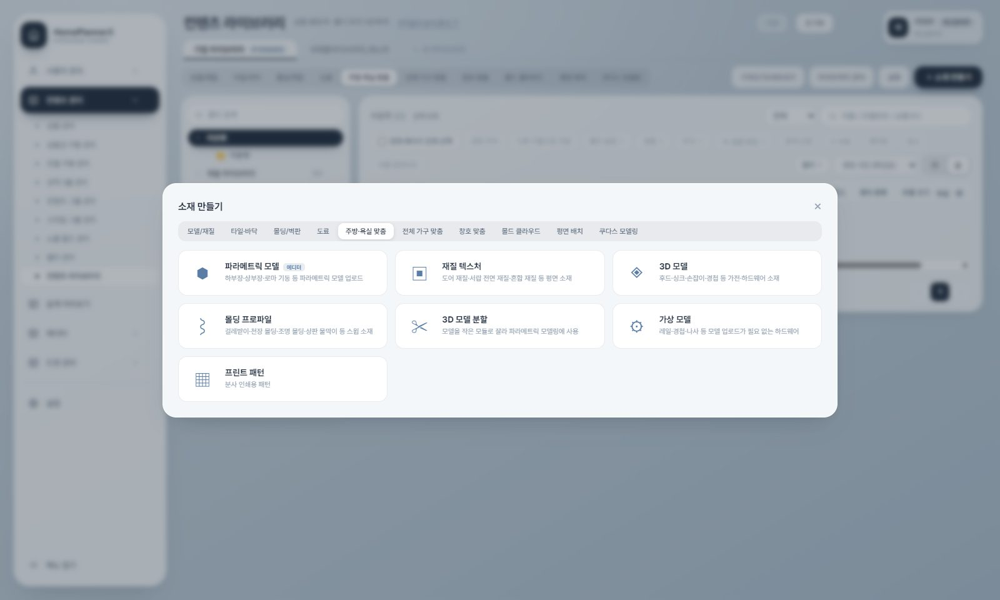
2-9 가져오기 / 내보내기 brandgoods/import
- 무엇을 하나
- 엑셀로 상품을 대량 등록·수정하고, 분류를 골라 상품 속성을 엑셀로 내려받습니다. 모든 작업은 이력 표에 남습니다.
- 상품 탭
- 작업 종류 필터(전체/가져오기/내보내기) · 이력 표(작업 · 작업 시간 · 작업자(마스킹) · 라이브러리 · 성공 상품 수 · 상태 · 작업) · ‘상품 내보내기’ · ‘상품 가져오기’(파일 선택 창이 바로 열림)
- 내보내기 3단계
- ① 분류 선택 — 라이브러리 › 업무 탭 › 소재 라이브러리 › 폴더 트리 체크(라이브러리를 넘나드는 내보내기 불가) ② 속성 선택 — 생성 방식 / 기본 정보 / 상품 정보 / 소재 정보 / 유통 정보 / 사용자 정의 정보, 최대 100개 ③ 표 내보내기
- 폴더 탭
- ‘폴더 구조 가져오기’와 이력(생성 폴더 수)
- HP3
- 모달로 구현. 내보내기는 실제 CSV(UTF-8 BOM, 엑셀 호환)를 내려받고, 가져오기는 CSV 머리글(상품명·모델번호·상품코드·판매가·태그 …)로 새 상품을 만들거나 ‘상품 ID’가 같으면 갱신합니다. 폴더 구조는 ‘상위/하위/하위’ 경로 CSV로 가져옵니다. 양식 파일을 내려받을 수 있습니다.
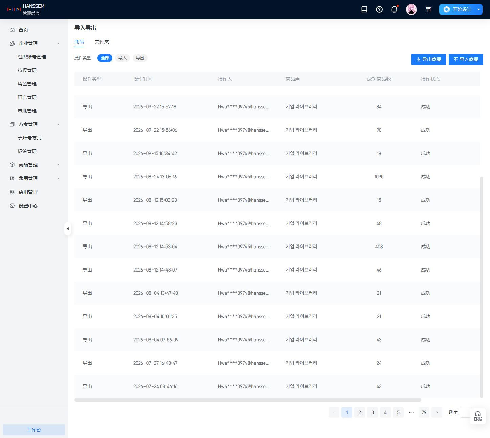
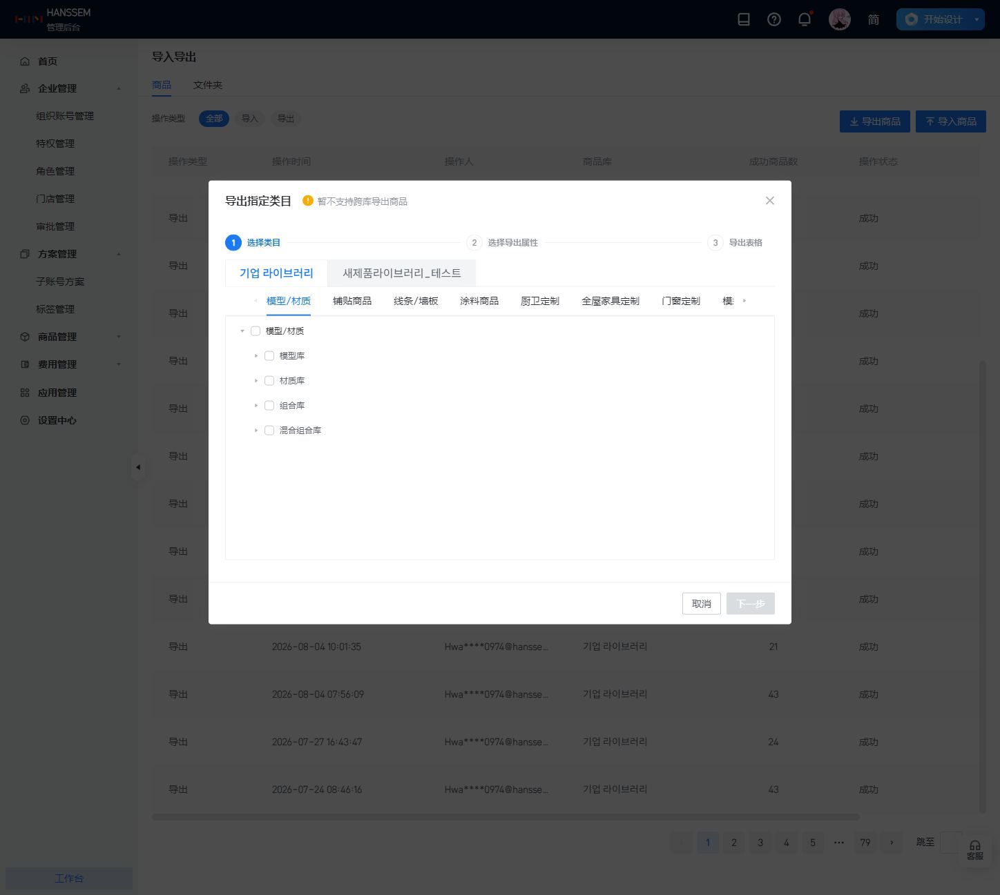
2-10 라이브러리 관리 brandgoods/library/set
- 무엇을 하나
- 현재 라이브러리의 이름과 접근 권한을 정합니다.
- 탭
- 기본 정보(이름 12자) · 인원 설정(인원 추가, 부서별 노출 ‘기업 내부 기본 노출’, 표: 이름·휴대폰·이메일·부서·권한·노출 업무 라인·작업) · 외부 계정(‘외부 계정 기본 노출’, 표: 이름·이메일·부서·권한·작업)
- 새 라이브러리
- ‘+ 新建商品库’ — 기업 라이브러리와 별도로 상품을 모아 특정 조직·외부에 공개. 상품은 기업 라이브러리에서 동기화(syncData)합니다.
- HP3
- 모달로 구현(기본 정보·인원 설정·외부 계정, 권한 관리/편집/조회). 추가 라이브러리는 삭제할 수 있고, 기업 라이브러리는 삭제할 수 없습니다.
2-11 설정 设置
| 섹션 | 항목 | HP3 동작 |
|---|---|---|
| 콘텐츠 표시 | 내용 영역에 폴더 표시 (표시/숨김) | 표시하면 목록 위에 하위 폴더 바로가기 |
| 폴더 표지 | 자동 표지 (켜기 / 끄기만 / 끄고 표지 비우기) | 값 저장 (폴더 표지는 ⋯ › 표지 설정) |
| 목록 작업 항목 | 툴바 버튼 드래그 순서 · 표시 | 툴바에 그대로 반영 |
| 도구 측 정렬 | 상품 사용자 정렬 가중치 | 값 저장 |
| 통화 | 관리자 화면 / 설계 도구 표시 규칙 | 값 저장 |
| 가격 정렬 통화 | 통화 종류 (24시간 안에 반영) | 값 저장 |
| 조합 모델 동기화 규칙 | 하위 모델 비노출 → 조합도 비노출 / 하위 삭제 → 조합도 삭제 | 값 저장 |
| 조합 · 혼합 조합 무효 검사 | 켜기 / 끄기 | 값 저장 |
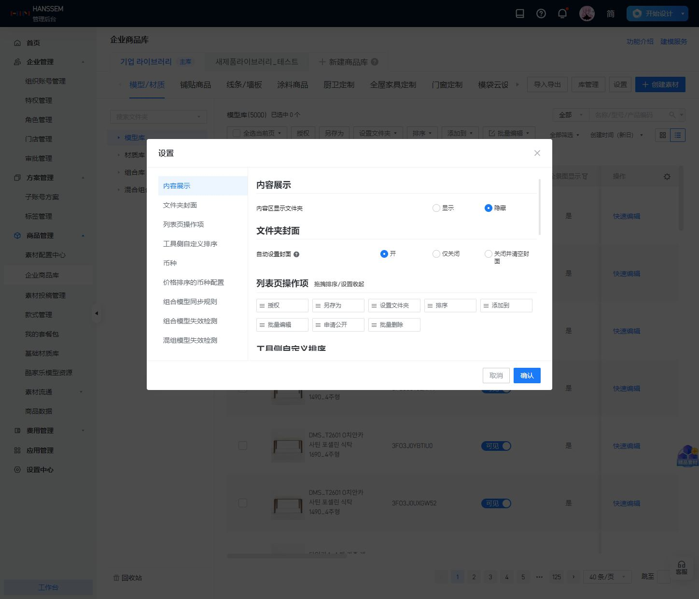
2-12 휴지통 brandgood/trash
- 무엇을 하나
- 현재 업무 탭의 소재 라이브러리 전체에서 지운 상품을 모아 보여 주고 복원합니다. 삭제 시간 순 정렬, 필터, ‘전체 선택 복원’, 카드별 ‘복원’.
- HP3
- 구현 — 복원, 전체 복원에 더해 영구 삭제를 추가했습니다(확인 팝업).
3API 정리
화면이 부르는 내부 API입니다(로그인 세션 쿠키 기반, 개방 API 아님). 이번 분석에서는 GET만 호출했습니다.
| API | 용도 |
|---|---|
| GET /bgs/dynamic-config?page_id=1&v2=1 | 업무 탭·소재 라이브러리·툴바 플러그인·권한 규칙 구성 |
| GET /bgs/custom/library/mylibraries?withMain=true | 라이브러리 목록(기업 + 추가) |
| GET /bgs/custom/library/extend/info | 라이브러리 설정(자동 표지, 통화, 동기화 …) |
| GET /bgs/config/global | 기능 플래그(공개 지원, 그룹 검사 …) |
| GET /bgs/businesscat?library=<n> | 소재 라이브러리의 폴더 트리 |
| GET /bgs/brandgood/enterprise?library=<n>|catid=<obsId>&start&num&orderby | 상품 목록 (tablemodel=true면 표 컬럼용 확장 정보 포함) |
| GET /bgs/brandgood/trash?library=…&orderby=2 | 휴지통 목록 |
| GET /bgs/customtag?start=0&num=200 | 태그 그룹·태그 |
| GET /bgs/brands/v2 · /bgs/authorized/brands | 자체 브랜드·시리즈 / 권한 부여 파트너 |
| GET /bgs/customfield/query · POST /bgs/customfield/data/query | 사용자 정의 필드 정의 / 값 |
| GET /pub/saas/brandgoods/detail?obsbrandgoodsid=… | 상품 상세 페이지 |
www.coohom.com/api/saas/openapi/...)의 brandgood/detail은 기본 정보 12개 필드만 줍니다(이전 조사). 이 관리 화면 수준의 데이터를 HP3로 정기 동기화하려면 쿠지알러에 개방 API 범위 확대를 요청하거나, 내보내기 CSV를 HP3 가져오기로 넣는 방식이 현실적입니다.3-1파라메트릭 모델 에디터 (参数化模型编辑器)
상품 상세의 ‘모델 편집(编辑模型)’ 버튼이 여는 /vc/modeleditor/new?tooltype=cabinet&obsbrandgoodid=… 화면입니다. 하부장 같은 맞춤 가구를 변수(W·D·H·재질·옵션)와 수식으로 정의된 부품들의 조립으로 만듭니다. 분석은 기존 모델(EURO5 1210 하부장 SET)을 열어 보기만 했고, 수정·저장은 하지 않았습니다(실행 취소 버튼이 비활성인 것으로 변경 없음 확인).
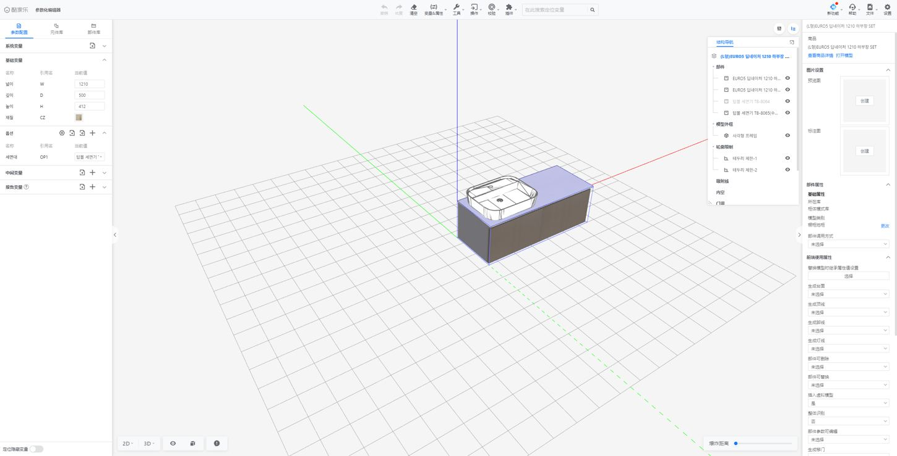
상세 명세메뉴·단축키·속성 패널·대화상자·업무 속성·수식·데이터 구조 전체는 파라메트릭 에디터 명세에 정리했습니다(새 에디터 기준 문서).
화면 구성
| 영역 | 구성 |
|---|---|
| 상단 메뉴 | 실행 취소 · 다시 실행 · 비우기 | 변수&속성(전역 변수, 변수 계열, 업무 속성, 견적 설정 Alt+B, 데이터 출력 설정 Alt+S) · 도구(빠른 모델링, 다리 수, 외부 값, 문 개구부 연결 Alt+M, 배열, 부품 노드 보고) · 조작(숨김→억제 전환, 부품 동명 변수 참조) · 검증(모델 진단, 참조 보기) · 플러그인 | 변수 위치 검색 | 파일(새로 만들기, 열기, 저장 Ctrl+S, 저장 후 입고 Ctrl+Alt+S, 다른 이름으로 저장, 모델 버전) · 도움말 |
| 왼쪽 · 파라미터 설정 | 시스템 변수 / 기본 변수(이름·참조명·현재값: 넓이 W, 깊이 D, 높이 H, 재질 CZ) / 사용자 그룹(예: 옵션 — 세면대 OP1 선택형) / 중간 변수 / 보고 변수(예: 업데이트 LST_MOD_DATE) / 숨김 변수 표시 |
| 왼쪽 · 요소 라이브러리 | 파라메트릭 모델(평면 판재, 로프트, 스윕, 경사 절단 스윕, 격자, 모서리형 판재) · 보조 구조(윤곽 제한, 흡착선 2종, 내부 공간, 문 개구부, 간섭 영역, 연결 부품, 도면 표기 보조 선·면·체, 공정 구멍·홈, 치수 참조선·면) |
| 왼쪽 · 부품 라이브러리 | 검색 + 폴더: 미분류 모델 · 캐비닛 모드 · 캐비닛 조합 · 부품 모드 · 내부 부품 · 반제품 · 액세서리 · 가상 모델 라이브러리 (= 컨텐츠 라이브러리의 맞춤 탭 소재 라이브러리) |
| 가운데 | 3D 화면(Z 위, 좌후하 원점) · 구조 탐색(부품, 모델 외곽 틀, 윤곽 제한, 흡착선, 내부 공간, 문 개구부, 간섭 영역, 연결 부품 — 눈 아이콘으로 표시 전환) · 2D/3D 시점 · 숨김 보기 · 진단 · 분해 거리 슬라이더 |
| 오른쪽 · 속성 | 모델 선택 시: 상품(상세 보기·모델 열기), 이미지 설정(미리보기·표기도 생성), 부품 속성(소속 라이브러리, 모델 유형), 프론트 사용 속성(상판·상부몰딩·걸레받이·조명몰딩 생성, 부품 삭제·교체 가능, 가상 모델 삽입, 전체 인식, 간섭 검사 영역, 시스템 변수 논리, 텍스처 통일, 숨김 변수 전달…) 부품 선택 시: 참조명, 크기(W/D/H 수식), 물리 속성(위치 X/Y/Z, 회전 X/Y/Z), 호출 방식(원점/좌후하/사용자 기준점), 숨김 조건, 교체·견적·삭제 가능, 스타일 패키지, 목록 출력, 파라미터 편집, 억제 조건 |
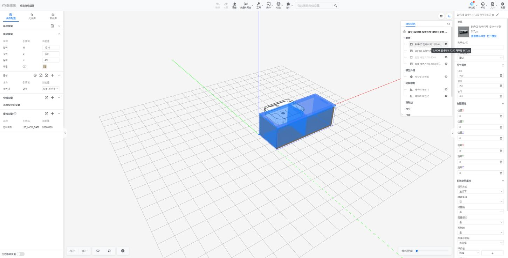
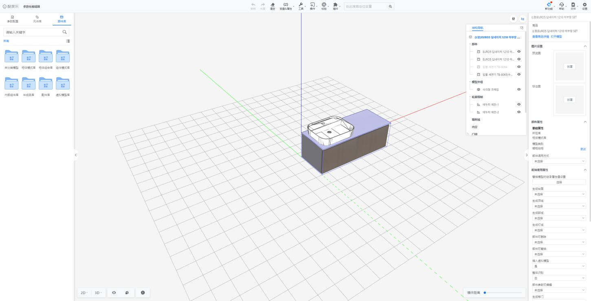
모델 데이터 구조 editor/api/site/editordata
에디터는 editordata?obsbrandgoodid=…&doupdate=false(조회 전용)로 모델을 읽습니다. editorData 주요 키:
| 키 | 내용 |
|---|---|
| inputs | 변수 — paramName(참조명), displayName, value, valueType(float·int·string·material·float3), editorOptions(선택지), min/max/step, visible, groupTypeId |
| customParamGroups | 사용자 변수 그룹 (예: 옵션 → [OP1]) |
| constants · reports | 중간 변수 · 보고 변수 |
| modelInstances | 부품 — 다른 상품(obsBrandGoodId)을 W/D/H·위치·회전 수식과 공통 속성(ignore 숨김, KJL_model_suppress_param 억제, replaceable, needQuotation, isDeletable, displayInCostList, paramOverride, invokedPosType)으로 배치 |
| frameModels · innerFrameModels | 모델 외곽 틀(size #W/#D/#H, 좌후하) · 내부 공간 |
| moldingPaths · adsorbLines · customDoorHoles · intersectBoxes · connectors · connectorModels · customAuxiliaries · wireLayouts | 윤곽 제한 · 흡착선 · 문 개구부 · 간섭 영역 · 연결점/선/면 · 연결 부품(배관·설치구) · 공정·표기 보조 · 배선 |
| paramModel | 모델 속성(생성 옵션·교체·삭제·간섭·숨김 전달 등) |
| outputConfig | 견적 크기(customSize #W/#D/#H)·생산 파라미터 |
{x: 11, y: -#D+324+20, z: 1}.요소 · 보조 구조 editor/api/site/primitive
| 요소 | 주요 파라미터 |
|---|---|
| 평면 판재 (PrimitiveModel.plank) | 두께(高, 기본 18), 외곽 점(plankPath: 점 수식 + 선 종류 직선/원호, 구멍), 앞·뒤·옆면 재질과 결 각도 |
| 로프트 / 스윕 (lofting · brepSweep) | 단면(轮廓), 경로(loftPath 점·선·닫힘), 각도, 단면 폭·높이, 절단 높이 |
| 경사 절단 스윕 (brepSweepExtend) | + 시작·끝 면 경사 각도와 기준 변 |
| 격자 (grid) | 폭·깊이·두께, 격자 간격, 살 두께 |
| 모서리형 판재 (sideStylePlank) | 판재 + 모따기 면 재질 |
수식 문법 editor/api/site/expression/functions
#변수, @참조명.W(부품 참조), 사칙·^·%, 비교, AND/OR, 조건 ? 참 : 거짓(중첩), 함수 35종(abs, toRadians, sin…, ceil/floor/round, left/right/mid/strToNum, min/max/sqrt, deRound, rad, boolAt/boolAll, getOptionName, isNull …).
HP3 적용 — 에디터 메뉴 ‘파라메트릭 모델 에디터’
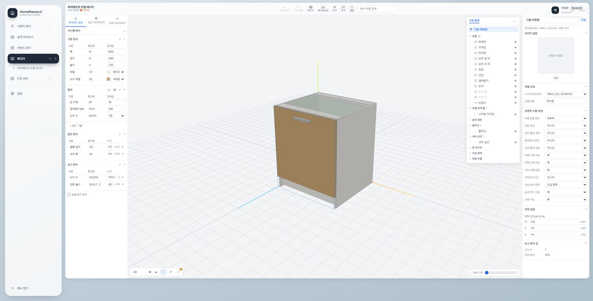
| 쿠지알러 | HP3 |
|---|---|
| 변수 · 그룹 · 중간 · 보고 변수 | 구현 유형(숫자·정수·문자/선택·예아니오·재질), 범위, 선택지, 노출, 그룹 이동 |
| 수식 문법 | 구현 같은 문법(src/param/expr.ts, 테스트 포함) |
| 평면 판재 · 스윕 · 로프트 · 경사 절단 스윕 · 격자 · 모서리형 판재 | 구현 외곽 점 직선/원호·구멍, 스윕 마이터 접합, 경사 끝면 |
| 부품 인스턴스(부품 라이브러리) | 구현 저장한 파라메트릭 모델을 W/D/H·변수 덮어쓰기로 재귀 계산, 컨텐츠 라이브러리 상품(3D 모델 또는 크기 상자) |
| 외곽 틀 · 내부 공간 · 윤곽 제한 · 흡착선 · 문 개구부 · 간섭 영역 · 연결점 · 공정 구멍 | 구현 3D 보조 표시 + 속성 편집 |
| 숨김 조건 · 억제 조건 · 호출 방식 · 교체/견적/삭제/목록/편집 속성 | 구현 억제는 계산·참조에서 제외, 숨김은 참조 유지 |
| 모델 진단 · 참조 보기 · 배열 · 숨김→억제 | 구현 |
| 빠른 모델링 | 비활성 쿠지알러 동작을 확인하지 못해 메뉴만 두고 꺼 둠 (이전에 임의로 만든 ‘하부장 자동 생성’은 뺐음) |
| 파일: 새로 만들기·열기 = 모델 유형 선택(选择模型类别) · 저장 · 저장 후 입고 · 다른 이름 · 모델 버전 | 구현 새 모델은 빈 모델(W·D·H·재질)로 시작 — 임의 템플릿 없음. 저장 후 입고 = 고른 라이브러리·실제 분류로 컨텐츠 라이브러리 상품(썸네일·GLB·크기). 버전 15개 보관 |
| 도구 종류(tooltype)별 요소·부품 라이브러리 | 구현 주방·욕실 / 전체 가구 / 창호 / 몰드 클라우드 — 3-2 절 |
| 2D/3D 시점 · 숨김 보기 · 분해 거리 · 구조 탐색 표시 전환 | 구현 |
| 변수 계열 · 외부 값 · 다리 수 · 문 개구부 연결 · 플러그인 · 표기도 · 텍스처 통일 · 업무 속성 세부 | 미구현 |
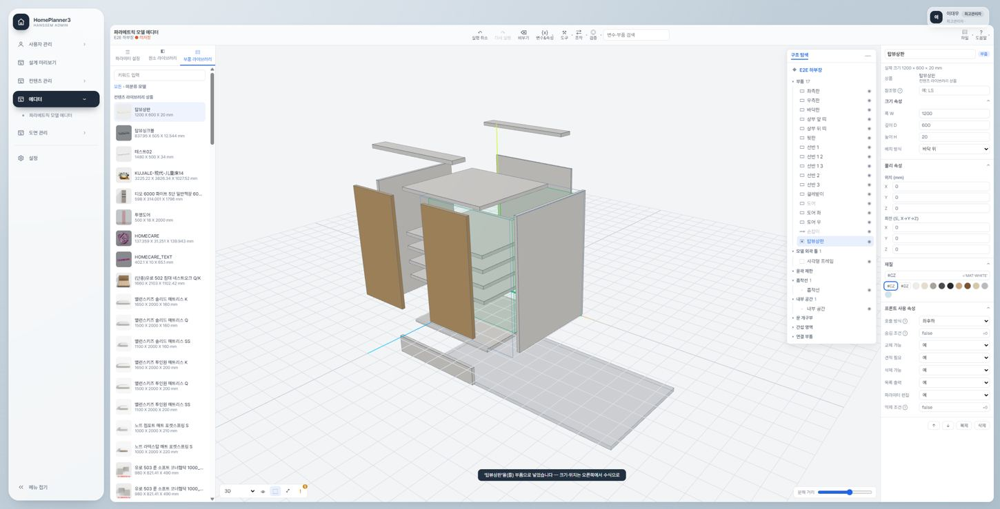
3-2소재 만들기 — 카드별 생성 조건
‘创建素材’ 카드는 화면에 고정된 것이 아니라 bgs/dynamic-config 의 업무 탭별 uploadPortals(카드 번호·이름·설명·연결 화면·권한)로 정해집니다. 카드마다 열리는 화면과 생성 조건(필수 선택값·파일 형식·용량·들어가는 라이브러리)이 다릅니다. 2026-10-06 쿠지알러 화면을 보기만 하고 확인했습니다 — 업로드·만들기·확인 버튼은 누르지 않았고, 확인 뒤 오늘 생긴 상품이 없는 것도 조회로 확인했습니다.
카드 → 화면 · 생성 조건 주방·욕실 맞춤 기준
| 카드 | 쿠지알러 화면 | 생성 조건 | HP3 |
|---|---|---|---|
| 파라메트릭 모델 参数化模型库 | 파라메트릭 에디터 /vc/modeleditor/new?tooltype=cabinet | 먼저 ‘모델 유형 선택’ — 소속 라이브러리(프론트/백엔드)와 실제 분류(真分类)를 골라야 확인 가능 | 구현 저장 후 입고 → 고른 라이브러리의 ‘미분류’ 폴더, 렌더 분류 = 실제 분류. 목록·상세의 ‘모델 편집’으로 다시 열기 |
| 재질 텍스처 材质贴图 | 일괄 만들기 material/upload?tooltype=cupboard | 렌더 분류 고정(全屋定制材质) · *재질 분류(대분류 18 → 재질 289) · jpg·jpeg·png · 10MB·10000×10000 이하 · 한 번 100장 · ‘만들기’ 뒤 폴더 선택 | 구현 재질 라이브러리, 원본 이미지는 IndexedDB |
| 3D 모델 | 정적 모델 업로드 model/upload?bztype=cabinet | .max(2021 이하)·.skp·.fbx·.glb·.3dm(·.rar·.zip) · 200MB 이하 · 모델링 가이드·업로드 가이드 | 구현 .fbx(GLB 변환)·.glb — 미분류 라이브러리. .skp·.max 등은 변환 서버가 없어 안내만 |
| 몰딩 프로파일 线条轮廓 | cabinet/profile | DXF · 5MB 이하 | 구현 DXF 닫힌 윤곽(LWPOLYLINE·LINE·ARC 등)을 단면으로 — 몰딩 라이브러리 |
| 3D 모델 분할 3d模型切割 | 새 탭 ‘模型切割工具’ /vc/modelcutting?tooltype=cabinet | 먼저 ‘상품 선택’ — 백엔드 › 반제품 라이브러리 › 분류 → 상품, 이어서 분할면 추가 · 저장 | 일부 상품 선택·3D 보기까지. 분할면·저장 결과 형식은 미확인이라 비활성 |
| 가상 모델 虚拟模型 | cabinet/virtualmodel | gif·jpeg·jpg·png·svg · 5MB 이하 | 구현 가상 부품 라이브러리 |
| 프린트 패턴 印花图案 | cabinet/pattern | jpg·jpeg·png · 10MB·5000×5000 이하 · 한 번 100장 · ‘업로드’ | 구현 패턴 라이브러리 |
전체 가구·창호 맞춤은 같은 카드에 tooltype 만 다릅니다(창호는 순서가 몰딩 프로파일 → 프린트 패턴 → 3D 모델 분할 → 가상 모델). 모델/재질·몰드 클라우드·쿠다스의 3D 모델·재질 텍스처 카드도 같은 업로드 화면을 씁니다. 업로드 다음 단계(서버 변환·정보 입력)는 실제로 올려 보지 않아 확인하지 못했으므로, HP3 는 올린 파일로 바로 상품을 만들고(상품명 = 파일 이름) 정보는 빠른 편집·상세에서 채웁니다.
파라메트릭 모델 — 모델 유형 선택 editor/api/site/custommodel/prodcats
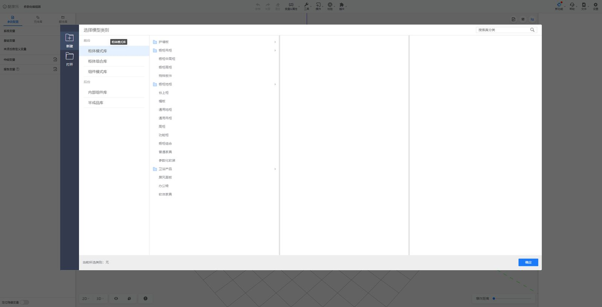
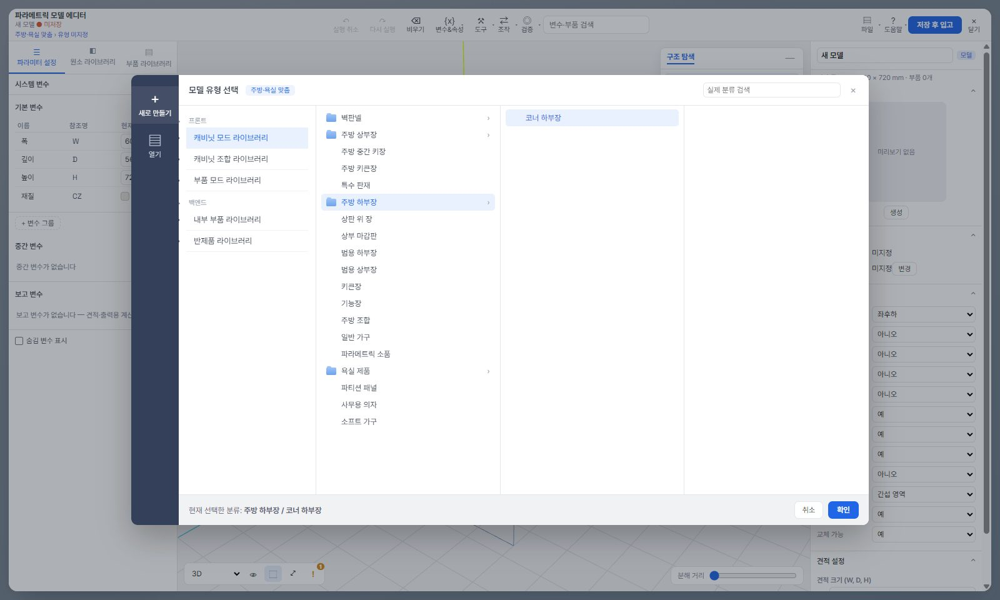
| 도구 종류 | 프론트 | 백엔드 | 요소 라이브러리 차이 (primitive?tooltype=) |
|---|---|---|---|
| 주방·욕실 맞춤 cabinet | 캐비닛 모드(15) · 캐비닛 조합(16) · 부품 모드(17) | 내부 부품(18) · 반제품(20) | 판재·로프트·스윕·경사 절단 스윕·격자·모서리형 판재 / 윤곽 제한·흡착선·내부 공간·문 개구부·간섭 영역·연결점·배선·연결 부품 |
| 전체 가구 맞춤 wardrobe | 25 · 26 · 27 | 28 · 30 | 주방·욕실과 같음 + 모서리 기둥 안쪽 흡착선 |
| 창호 맞춤 doorwindow | 일반 창호(35) · 알루미늄 창호(41) | 일반 부품(36) · 알루미늄 창호 부품(42) · 반제품(37) | 판재 다음 모서리형 판재 / 흡착 윤곽 · 창 개구부 — 윤곽 제한·내부 공간·배선 없음 |
| 몰드 클라우드 arch | 파라메트릭 모델(97) | 파라메트릭 모델 부품(98) | 판재·로프트·스윕·경사 절단 스윕 / 윤곽 제한·문 개구부만 |
분류 트리는 custommodel/prodcats(position 별), 라이브러리 ↔ position 은 dynamic-config 에서 가져옵니다. 주방·욕실은 화면에서 직접 확인했고, 나머지 셋은 같은 규칙(액세서리·가상 부품·불리언 형상 라이브러리는 창에 없음)으로 맞췄습니다. 분류 이름 256개·재질 이름 282개를 한글로 옮겼으며 scripts/build-create-data.py 로 다시 만들 수 있습니다.
업로드 화면
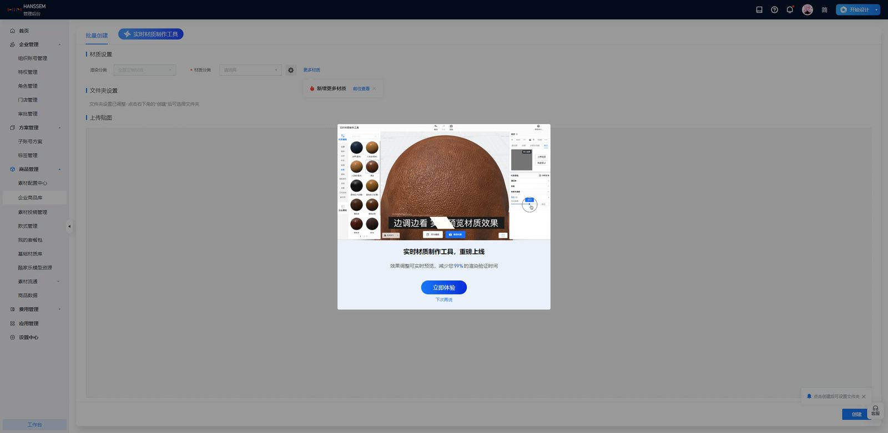
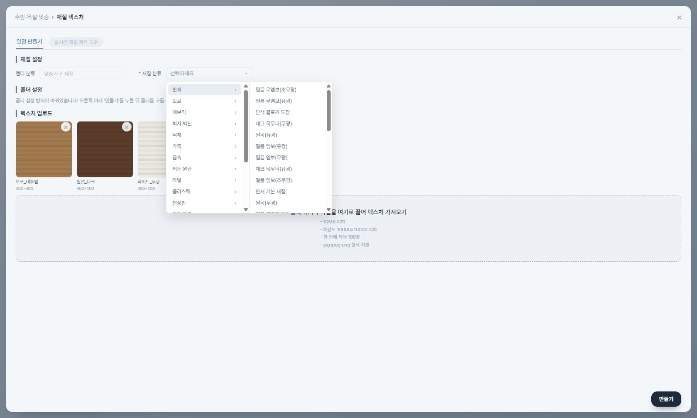
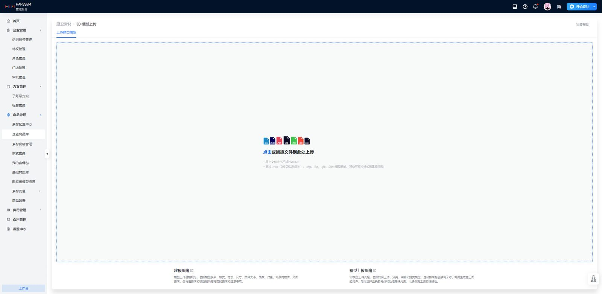
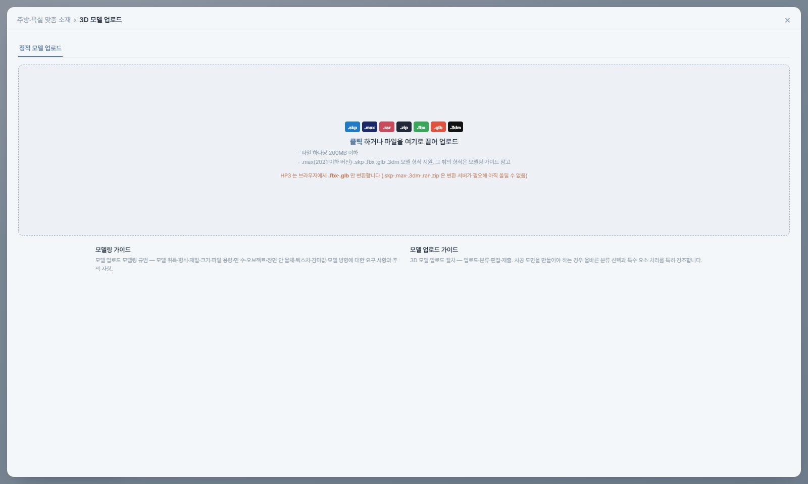
아직 열어 보지 않은 카드
혼합 재질 · 타일·바닥(타일 상품·보더 패턴·타일 배열 패턴·워터젯 패턴·비정형 상품·파라메트릭 편집기) · 몰딩/벽판 · 도료(컬러칩·벽면 패턴·도료 상품) · 몰드 클라우드 몰딩 프로파일 · 평면 배치 배치 소재 · 쿠다스 모델. HP3 에서는 카드에 ‘화면 미확인’을 표시하고 안내만 하며, 입력 양식을 지어내지 않았습니다. 쿠지알러 화면을 확인하면 같은 방식으로 옮깁니다.
4HP3 반영 내역
HP3 어드민 ‘컨텐츠 관리’ 대메뉴(및 하위 ‘컨텐츠 라이브러리’)를 누르면 열립니다. 백엔드가 없는 현재 구조에 맞춰 데이터는 브라우저(localStorage)에 두고, 상단 ‘저장’을 눌러야 영구 반영됩니다(다른 관리 화면과 같은 규칙).
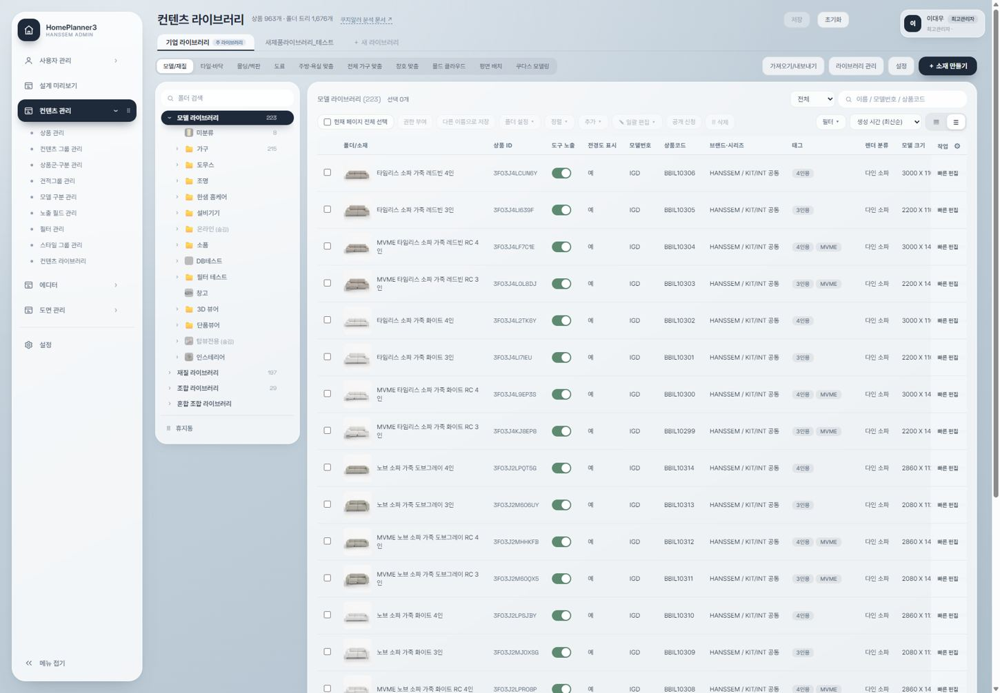
기능 대응표
| 영역 | 쿠지알러 | HP3 |
|---|---|---|
| 초기 데이터 | — | 쿠지알러에서 읽어 온 실제 데이터: 폴더 트리 15개 라이브러리(1,676개 폴더), 상품 963개(폴더별 최대 8개 샘플), 태그 그룹 123개, 브랜드·시리즈, 파트너, 사용자 정의 필드. scripts/build-content-seed.py로 다시 만들 수 있음 |
| 라이브러리 | 기업 + 추가, 새로 만들기 | 동일 + 추가 라이브러리 삭제 |
| 업무 탭 / 소재 라이브러리 | 10개 탭, 프론트/백엔드 그룹 | 동일 (한글 명칭) |
| 폴더 | 트리·검색·⋯ 메뉴 5개 | 동일 + 하위 폴더 상품 포함 토글 |
| 목록 | 표/카드, 컬럼 31개, 40개/페이지 | 표/카드, 컬럼 설정(드래그), 20/50/100개 |
| 툴바 | 8개 + 탭 전용 3개 | 동일 (설정의 순서·표시 반영) |
| 일괄 편집 | 18개 항목 | 15개 동작, 3개(분할 전처리·설비 분류·모델 설정)는 에디터 연동 안내 |
| 필터·정렬·검색 | 시스템 필터 5개 + 태그 123그룹 | 동일 + 태그 검색·그룹 미지정 |
| 빠른 편집 / 상세 | 모달 / 새 탭 | 모달 / 모달, 작업 이력 자동 기록 |
| 소재 만들기 | 탭별 카드 → 카드별 생성 화면 | 같은 카드 → 같은 생성 화면·조건 (3-2 절), 미확인 카드는 안내만 |
| 가져오기/내보내기 | 엑셀, 3단계 내보내기, 이력 | CSV, 3단계 내보내기, 이력, 양식 다운로드 |
| 라이브러리 관리 / 설정 / 휴지통 | 별도 페이지 / 모달 / 트리 하단 | 모달 / 모달 / 트리 하단 (+ 영구 삭제) |
미구현 · 후속 과제
- 백엔드 저장 — 지금은 브라우저 저장(localStorage). 운영 전 API·DB(상품·폴더·이력 테이블)로 옮겨야 다른 운영자와 공유됩니다.
- 파라메트릭 모델 에디터 연결 (반영됨) — ‘소재 만들기’의 파라메트릭 모델 카드만 에디터를 엽니다(모델 유형 선택부터). 다른 카드는 쿠지알러처럼 각자의 업로드 화면으로 갑니다. 목록·상세의 ‘모델 편집’으로 다시 열고, ‘저장 후 입고’로 갱신합니다.
- 남은 모델 데이터 작업 — 3D 모델 분할(분할면·저장), 3D 재질 교체·범례 태그·분할 전처리·설비 분류, 에디터의 빠른 모델링·변수 계열·외부 값·플러그인은 쿠지알러 동작을 확인한 뒤 진행.
- 화면 미확인 카드 — 3-2 절 목록. 쿠지알러 화면 확인(보기만) 후 이식.
- 업로드 변환 — .fbx·.glb 는 브라우저에서 변환(
src/data/fbxConvert.ts). .skp·.max·.3dm·압축 파일은 변환 서버가 있어야 합니다. - 기존 ‘상품 관리’와 통합 — HP3 기존 상품(
Products.tsx)과 이 라이브러리 상품의 관계(같은 원장으로 합칠지)를 결정해야 합니다. - 쿠지알러 동기화 — 시드는 분석 시점 스냅숏입니다. 주기 동기화는 위 API 참고 상자 내용대로 방식 결정 필요.
- 이미지 — 상품 이미지는 쿠지알러 CDN 주소를 그대로 씁니다. 사내 CDN으로 옮길지 결정 필요.